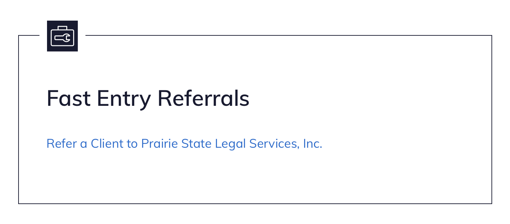

Organization “group” roles
Organizations have their own membership roles, separate from the user roles that ILAO staff manage when approving users. Most users are not assigned any role other than the default “member.”
There are 3 specialty permissions that grant access to specific organization tools:
Organization manager
OAS manager
Fast entry user
All legal aid members can add and edit their own job postings and calendar events. Organization managers can not edit job postings or events posted by other users.
Organization manager
Organization managers can edit the organization profile, locations, and services and have a custom block on their dashboard to link to these pages.
Organization managers can also manage members within their organization including:
adding users to their organization
removing members from their organization
editing the group permissions associated with a member of their organization
Note
Need to add a link to the membership list so that it can be edited/disassociate individuals with an organization.
OAS manager
OAS managers can do everything an organization manager can do plus:
Edit triage rule content (used for triage not managed by guided navigation)
Edit intake settings
Edit triage rule webforms (linked to in triage rule content)
Edit case acceptance policies (used for triage managed by guided navigation)
Fast entry user
The fast entry user has access to the fast entry intake form.
A link for the fast entry form for each organization the fast entry user has access to will be listed on this block.